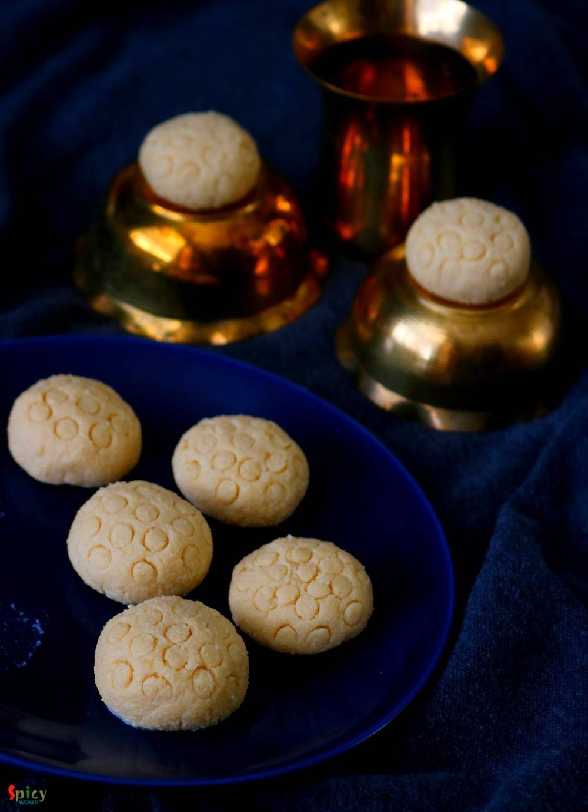

Simple and Easy Recipes
Nolen Gurer Sondesh / Date Palm Jaggery flavored Fudge
© 2016 Spicy World, Published on: Dec 7, 2018
In Bengal, we enjoy our winter with some signature food and sweets. One of the popular sweet is Nolen gurer Sondesh. Nolen gur is Date Palm Jaggery which is a very fragrant variety of Jaggery. Be it Gurer Rosogolla or Sondesh any Bengali can die for them. I kept the process very simple. So, go ahead enjoy the recipe with video and make them in your kitchen as soon possible.

Ingredients
- 1 liter of full fat milk.
- 3-4 Tablespoons of lemon juice or vinegar.
- 4-5 Tablespoons of Nolen Gur (less than half ball of a patali if using).
- Half Teaspoon ghee.


Steps
Boil the milk in a pan over medium to low heat, stir occasionally.
Once the milk starts boiling, lower the flame. Pour the lime juice or vinegar and stir gently. Milk will start cuddling and change into chenna which is cottage cheese.
Turn off the heat and leave the chenna like this for 3 minutes.
Pour the chenna with water in a cheese cloth or thin cotton cloth and let the water drain away. Be careful while doing this as the greenish water will be very hot.
Put the cloth with chenna under the running water, wash them gently to get rid of lemon flavor.
Squeeze little bit with your hand, then hang the cloth with chenna for around 45-50 minutes.
Make sure the chenna should not become too dry.
Now put the chenna over a flat surface and knead it. Start kneading with the heal of your palm for about 4 to 5 minutes.
Then Add Nolen Gur ( Date Palm Jaggery ) and knead again for 2 minutes or until jaggery is totally mixed with the chenna.
Put a nonstick pan on low heat, add the kneaded chenna. Cook on low flame by stirring it continuously with a spatula for about 4 to 5 minutes. When the sondesh will start leaving the pan, immediately turn off the heat.
Do not cook long, sondesh will become hard.
Apply some ghee all over your hand. Take some portion and roll gently within your palm.
If you have molds, brush them with little ghee and give shape with them.
I didn't have molds, so pricked the surface of sondesh with a straw. You will get 7-8 medium sized sondesh.
Your nolen gurer sondesh is ready to serve.
Serve this warm during winter.
")